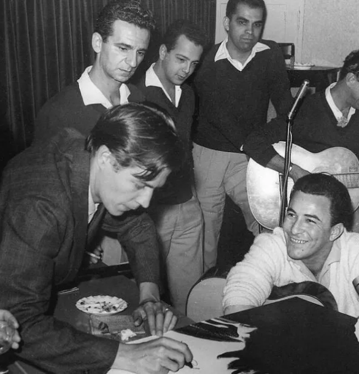

O começo
A bossa nova teve seu início no final da década de 1950 no Rio de Janeiro, Brasil. Surgiu como uma resposta à música popular da época, buscando uma abordagem mais refinada e sofisticada. Influenciada pelo samba, jazz e música clássica, a bossa nova incorporou harmonias complexas, ritmos suaves e melodias cativantes. João Gilberto, Tom Jobim e Vinicius de Moraes foram alguns dos pioneiros que ajudaram a moldar esse novo estilo musical, marcado pelo uso inovador do violão e a interpretação suave e intimista.
